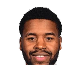

“Well, I was actually working out at the practice facility in Utah. I was working out, and JZ (Justin Zanik) comes out on the court and says, ‘Walker, stop. I need you to take this call.’ So I was kinda freaking out. I was like, ‘I don’t know what’s about to happen. I’m about to get traded?’Everything was going in my head, and he said, ‘It’s Coach Will Hardy.’ I was like, ‘Oh, OK.’ So I took the phone, and coach was like, ‘Hey, bud. What you doing?’ I was like, ‘I’m working out coach.’ He was like, ‘Well, just wanna say congrats on making the USA team.’ And I was like, ‘Oh!’ I definitely was kinda speechless, but they voiced their congrats, and here I am.”

What NBA players and coaches have said about Will Hardy
7 quotes about Will Hardy from 7 players, coaches and executives, newest first. Each one links to its original source.
Best quotes
“I feel like Joe is one of those guys — one way that I’ve always measured greatness is how much a person can learn from mistakes they make. Joe’s going to learn from his mistakes, just like Will Hardy learns from his mistakes quickly. …The coaches that learn and move on, they become the legendary coaches. And I think both Joe and Will have a chance to be those.”
RC Buford:
“I think we had many coaches over the last 10 years who could have stepped into that role. Ime Udoka was with us, along with James Borrego, Brett Brown, Mike Budenholzer, and Will Hardy. There were many people with us who could have stepped into that role, but the longer Coach Pop stayed, the more those coaches moved on to other opportunities. When we needed Mitch to step up, he did so in a big way. It was incredibly emotional for him to take on that role. ‘Interim’ is probably the wrong word, because at the time of Pop’s stroke, we didn’t know whether Pop could come back. Mitch had that year to show the players—and all of us—who he could be as a coach.”
What Will Hardy has said about other players and coaches →
Quotes per season
Who talks about Will Hardy most
 Danny Ainge1 quote
Danny Ainge1 quote- Gregg Popovich1 quote

Jared Butler1 quote Jusuf Nurkic1 quote
Jusuf Nurkic1 quote Mike Conley1 quote
Mike Conley1 quote- RC Buford1 quote
 Walker Kessler1 quote
Walker Kessler1 quote
Back and forth
- Will Hardy and Walker Kessler2 quotes
- Will Hardy and Gregg Popovich2 quotes
2026-27
1 quoteJusuf Nurkić on why he chose to re-sign with the Jazz:
“The number one reason is Will Hardy, the coach. The organization did a part, the owners did a part, obviously my teammates, but I have so much faith in Will. He was communicating with me the whole summer pretty much, and then when everything kind of back and forth ended up and finally we agree.”
2025-26
1 quoteRC Buford:
“I think we had many coaches over the last 10 years who could have stepped into that role. Ime Udoka was with us, along with James Borrego, Brett Brown, Mike Budenholzer, and Will Hardy. There were many people with us who could have stepped into that role, but the longer Coach Pop stayed, the more those coaches moved on to other opportunities. When we needed Mitch to step up, he did so in a big way. It was incredibly emotional for him to take on that role. ‘Interim’ is probably the wrong word, because at the time of Pop’s stroke, we didn’t know whether Pop could come back. Mitch had that year to show the players—and all of us—who he could be as a coach.”
2023-24
1 quote“Well, I was actually working out at the practice facility in Utah. I was working out, and JZ (Justin Zanik) comes out on the court and says, ‘Walker, stop. I need you to take this call.’ So I was kinda freaking out. I was like, ‘I don’t know what’s about to happen. I’m about to get traded?’Everything was going in my head, and he said, ‘It’s Coach Will Hardy.’ I was like, ‘Oh, OK.’ So I took the phone, and coach was like, ‘Hey, bud. What you doing?’ I was like, ‘I’m working out coach.’ He was like, ‘Well, just wanna say congrats on making the USA team.’ And I was like, ‘Oh!’ I definitely was kinda speechless, but they voiced their congrats, and here I am.”
2022-23
4 quotes“I feel like Joe is one of those guys — one way that I’ve always measured greatness is how much a person can learn from mistakes they make. Joe’s going to learn from his mistakes, just like Will Hardy learns from his mistakes quickly. …The coaches that learn and move on, they become the legendary coaches. And I think both Joe and Will have a chance to be those.”
Meanwhile, Gregg Popovich on Will Hardy:
“He's ridiculously intelligent. And he's a hard worker. ... He was a pretty impressive individual from the get go. So I put him out on the court with the guys and found that he commanded respect very quickly, just by being himself.”
Conley told The Athletic.
“I came to the Jazz to play for championships. So I was wondering what would end up happening. But once we got a new coach (Will Hardy) in here and he started laying things out, I knew that I wanted to be here. We are building and developing. I wanted to put my ego aside and focus on the guys. I’ve loved every second of being on this team, and we play a brand of basketball here that we haven’t played in a while.”
Jared Butler on Will Hardy:
“He's really intense, but not like overbearing. You can tell that he's really serious about what he what he does, and he's got it all planned out. I can tell he's heavily defensive minded, which is great.”
Jared Butler on Will HardyTwitter @millerjryan